The app
Android, local-first. Records unprocessed 48 kHz audio and video, shows the waveform, and uploads only when asked, so an interrupted upload is the normal case, and every step is resumable and safe to repeat.
Since {{project.since}} · one backyard · Salt Lake City
This started when I began feeding a murder of local crows. They were obviously smart, obviously talking to each other, and I wanted to know what about. CrowGPT is the set of tools that came out of it: CawDex reads crow calls by type, the CrowGPT model says them back, and the goal is a translator that runs in both directions.
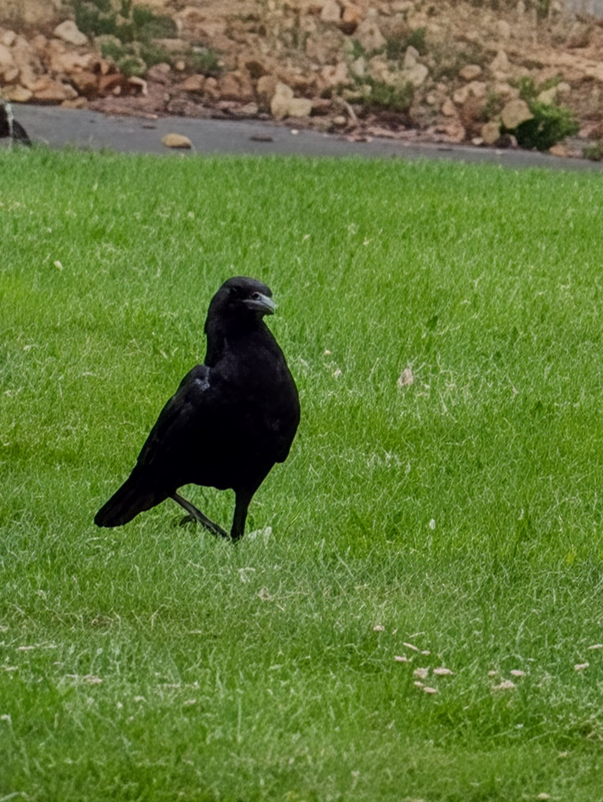
Each detection routed to its own species' model
Recording-grouped CV, one-vs-rest
{{crowgpt.call_type_list}}
The number that actually limits the project
The speaking half. A small transformer, 18M parameters, trained from scratch on call bouts cut out of archive recordings, with no human labeling anywhere in the loop. Ask it for an alarm call, a generic call, a flight call or begging, and it produces one.
Two generations of the model. Everything under a CrowGPT caption is generated, not a recording of a bird. Next to them, the real thing: a field-recorded American Crow alarm call, labeled by ear, so you can judge the gap, and the progress, yourself.
Two things about it matter more than the audio. It does not copy its training set: what it produces is generated, not retrieved. And it beat a 433M pretrained audio model fine-tuned on the same corpus, which says the corpus and the training setup are doing real work.
The obvious way to score generated calls is to ask BirdNET whether it hears a corvid. That number is circular: BirdNET also selected CrowGPT's training corpus, so the model has been trained indirectly to please the judge scoring it. It scores above real audio, which is not plausible as realism and is how the problem was caught. Every BirdNET-detection figure in this project inherits that bias, so the honest tiebreaker is a listening test, and no number goes here until one is run.
Building a labeled set by hand does not scale, so the collection is its own system: record corvid audio in the field with GPS, get it analyzed, and say what was heard and what was happening. Heavy model work never sits in the request path.
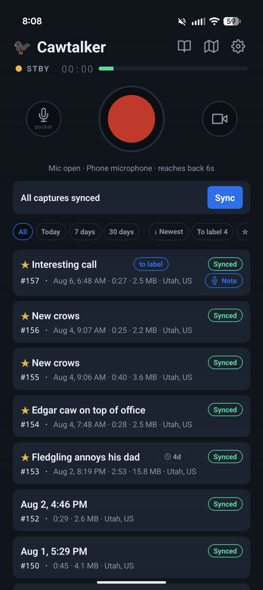
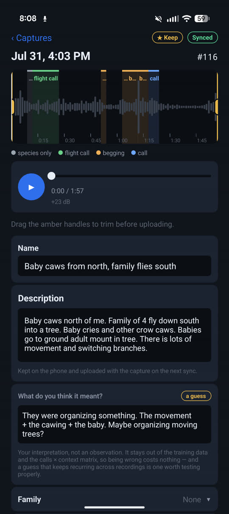
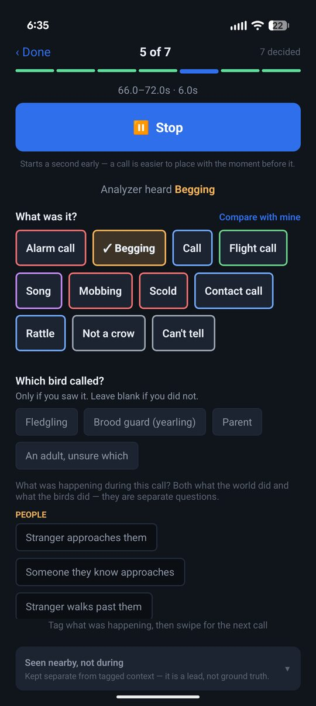
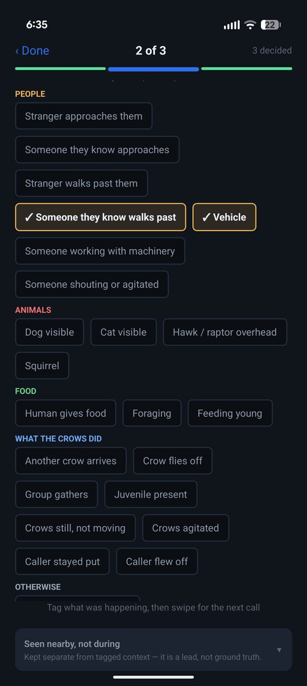
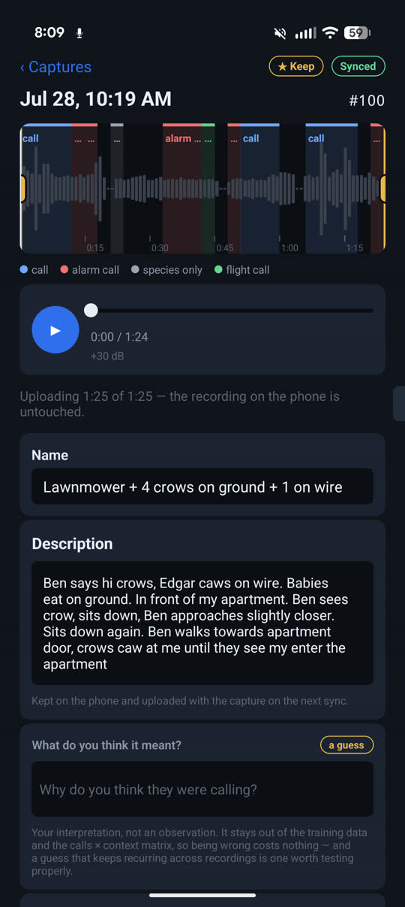
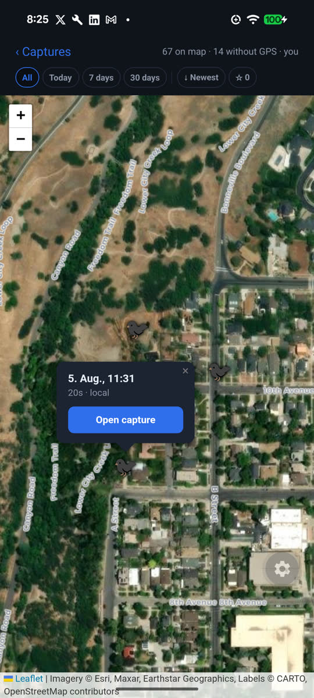
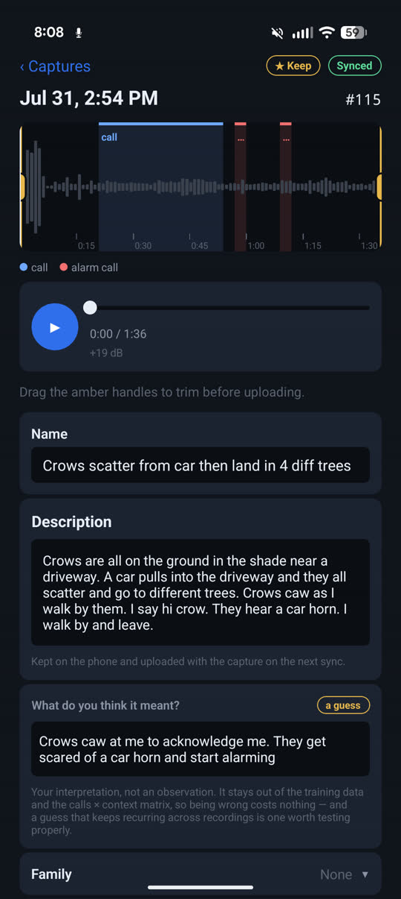
Android, local-first. Records unprocessed 48 kHz audio and video, shows the waveform, and uploads only when asked, so an interrupted upload is the normal case, and every step is resumable and safe to repeat.
Detection and call-typing run in the background, off the recording device. Findings come back attached to the waveform, and nothing waits on a model to finish.
Where the work happens. Calls get confirmed, corrected, or marked by ear, and each one tagged with what was going on at the time.
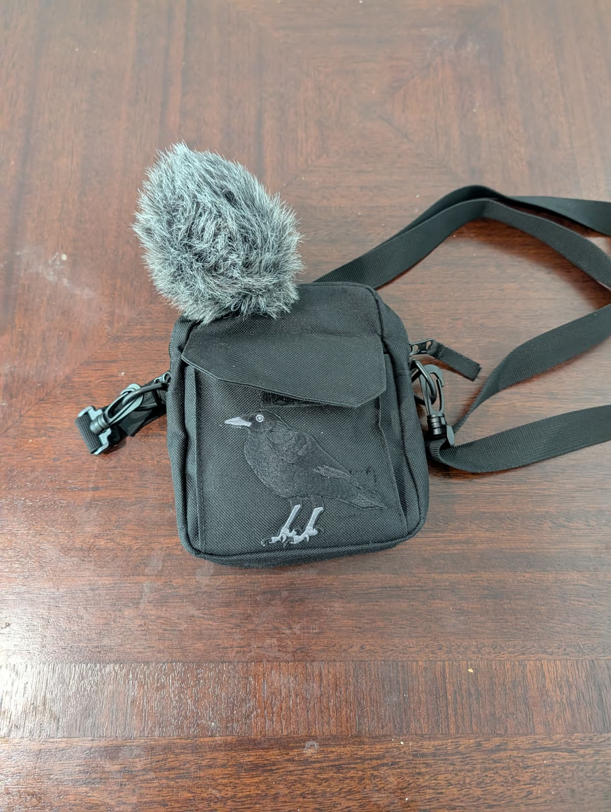
Labels are what the bird said: a span plus a call type from a closed vocabulary. They are the only thing that feeds training. Context is what a human saw while that call was made, and it attaches to the call rather than the recording: tag the whole capture and you credit every situation to every call in it, so a clip where a dog walks through and the crow later sings would report that crows sing at dogs. Observations are free text written afterwards, to explain a confusing prediction and to find which situations recur often enough to earn a tag of their own.
That matters more than it sounds. BirdNET scores a begging fledgling at 0.06, so a system that only lets you confirm detections can only ever collect what the model already finds, and the classes it is worst at could never gain a single training example.
One backyard produces one family's calls. Finding the next family used to be a random dawn walk, and the random walks kept coming home empty. CawScout replaces them with a prior: a 250 m grid over the whole valley, scored on where crows should be and ranked into a numbered target list on the app's map.
Crows nest and roost high, so canopy is the loudest signal in the score. A satellite canopy-height model reads every tree in the valley at 1 m resolution; stands of 15 m and up, about 45,000 of them, go into the grid, joined by thousands of individually-mapped street trees, each assigned its height from the same model. The taller the stand, the harder it pulls on the cells around it.
Crows forage on open turf, so parks, cemeteries, golf courses and grass come in from OpenStreetMap, nearly eight thousand features, with water and human food (fast food, supermarkets, picnic sites) as their own smaller signals. Each one radiates a few hundred metres into the surrounding cells, because a crow near a park is a crow the park explains.
Every signal becomes a heat layer over the grid and they sum by weight, canopy first, community crow sightings second, on purpose: the satellite measures every block equally, while sightings pile up wherever birders happen to walk. Predators then subtract, corrected for how well-watched the ground is. Great Horned Owls, the top predator of crow nests, cost the most. That penalty alone knocked a raptor-patrolled university cluster out of the top five.
Numbered targets over satellite imagery, alongside every capture's pin and community sightings of crows and each predator species: dated, photographed, toggleable per species. A target explains its own score and offers street view and directions, and the header says whether right now is even a good time to be out.
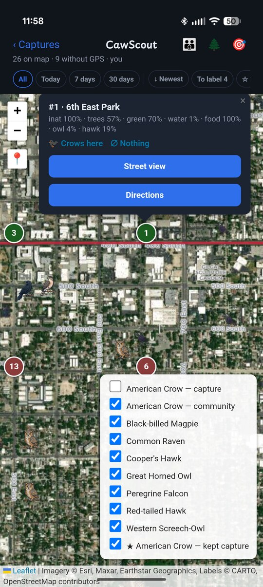
Two call classes stayed stubbornly weak when trained on the archives' coarse free-text tags. Trained instead on hand-reviewed labels ({{crowtools.segments}} segments somebody sat and listened to, one second at a time), the same pipeline, unchanged, lifts them decisively. The bottleneck was never the algorithm.
Chance is 0.50. The two classes not shown, flight call and rattle, were already strong on weak labels; these two were the failures.
So alarm and song were label-limited, not unlearnable. The path to strong heads is clean contextual labels, not a fancier model, which is exactly why the rest of this project is a data-collection system rather than more machine learning.
The end state is a translator that runs in both directions. CawDex, the call-type classifier, already works. The missing ingredient is semantics, what was actually happening when a call was made, and I collect that every day. Pair the two and you get a Crow Translate. Simple calls first: dog spotted, human spotted, food.
The other half is CrowGPT, which generates crow calls instead of reading them. Put the two together and it runs both directions: crow → human → crow. Cross-species conversation, and maybe friendship, with the help of AI.
Crow Translate · listening
A recording goes in; the corvids in it are found, named, and each call labeled by type on a timeline. That part works. Turning a type into meaning takes the second ingredient, what was happening at the moment the bird called, which is what I am out collecting.
CrowGPT · speaking
A model that generates crow calls rather than reading them, on demand and by type. Early, and getting better. It is the half that makes this a conversation instead of a very elaborate subtitle track.
Simple calls come first, because those are the ones a backyard produces often enough to learn from: a dog walking past, a person arriving, food going down. Nobody is decoding crow grammar here.
Inside the listening half there is a second split, and keeping it straight is the main design decision in the project. These need different machinery, and only one of them is solved.
The listening half. CawDex is the call-type classifier: audio goes in, and every corvid call in it comes out found, named by species, and labeled by type on a timeline. It is the index the translator will be built on, hence the name.
Raw audio is too high-dimensional to classify directly, so every clip becomes a fixed-length fingerprint first.
BirdNET finds the corvids in any audio or video file and names the species, with a waveform timeline of where the calls sit.
Each clip becomes a BirdNET embedding, a fingerprint where acoustically similar calls land near each other. Classical MFCC features and a general audio transformer both sat near chance; a bird-specific model was the unlock.
Mean, standard deviation and max across the clip's three-second segments, so the feature captures temporal spread, the signature of a repeated, insistent alarm versus a single call.
A small logistic-regression head per species maps the fingerprint to a call type. At a few hundred examples per species, a regularized linear model beats a deep net.
The state of play, plainly. Every limit below is a piece of work waiting, and most of them are more interesting than the parts that already run.
The crows I feed are five: Thrasher and Ripjaw the parents, Killer and Shredder the fledglings, and Edgar, a yearling who stayed on to help guard the brood. The notes I was already keeping on them turned out, by accident, to be proto-labels of exactly these call types, which is the whole reason a recording and a witnessed situation arrive together here instead of being reconciled weeks later.
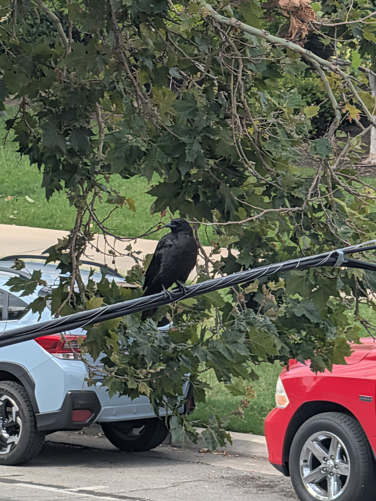
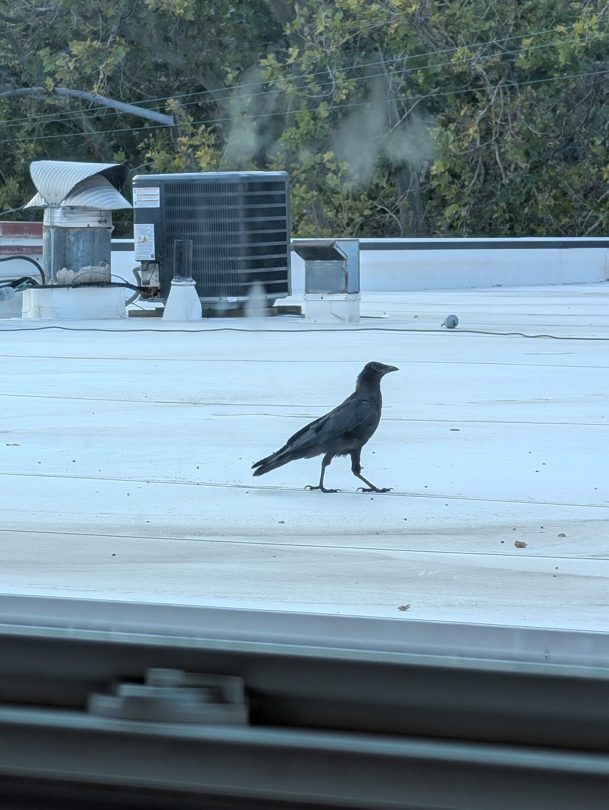
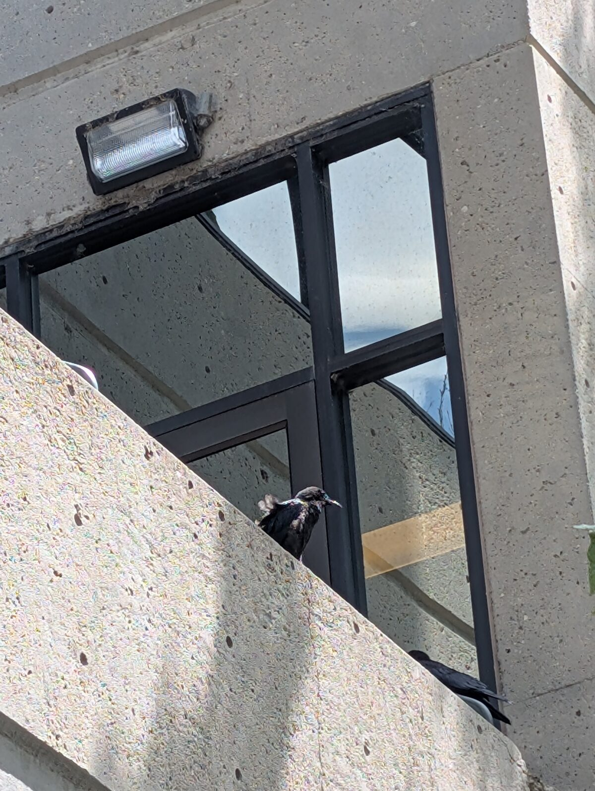
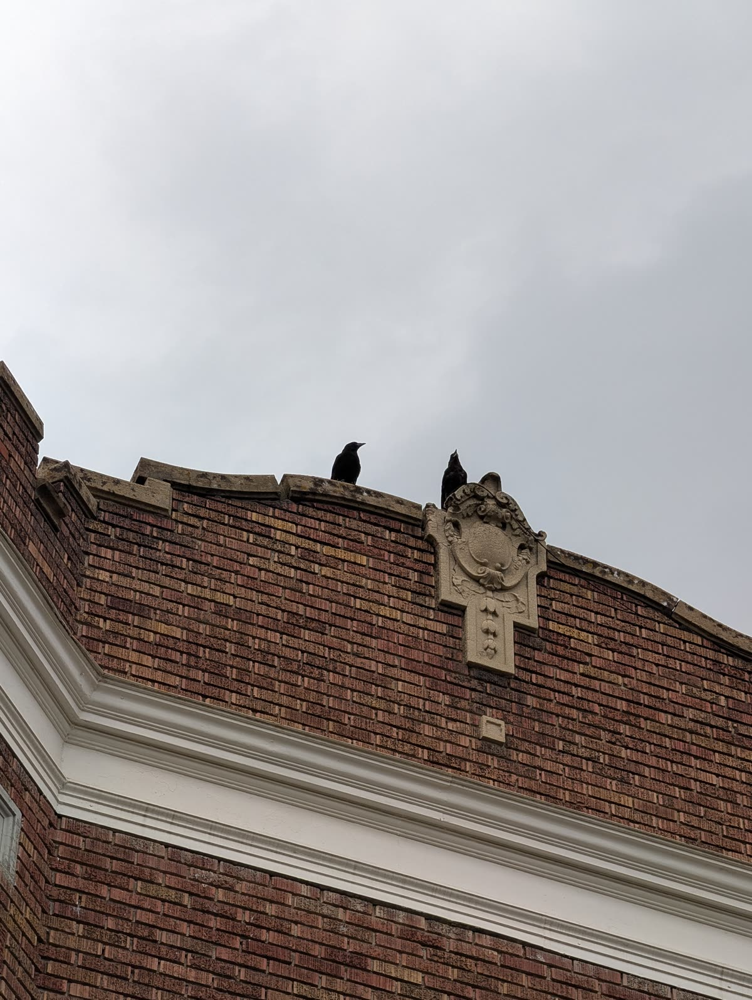
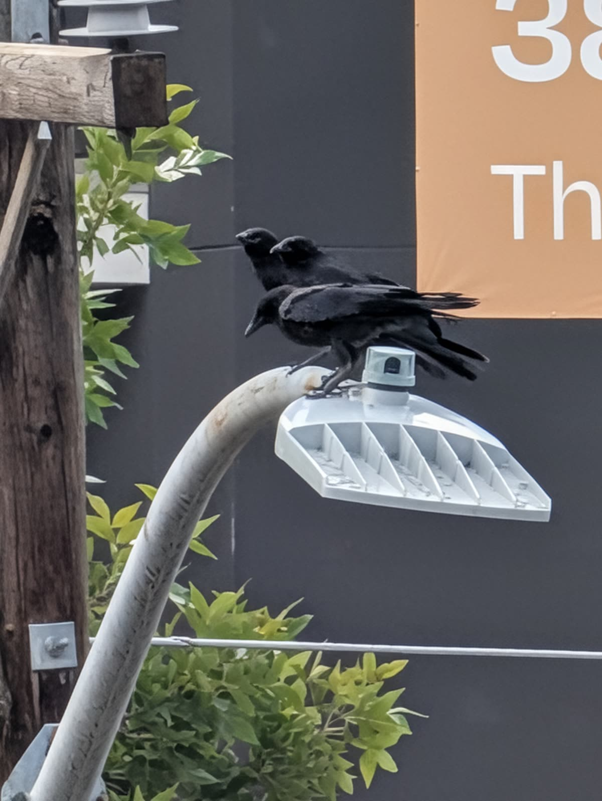
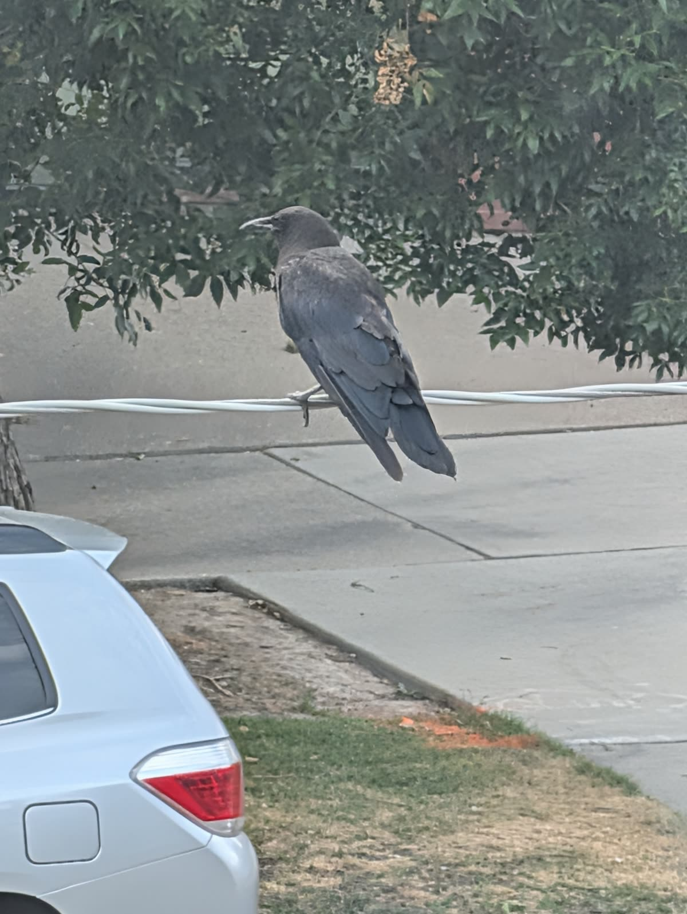
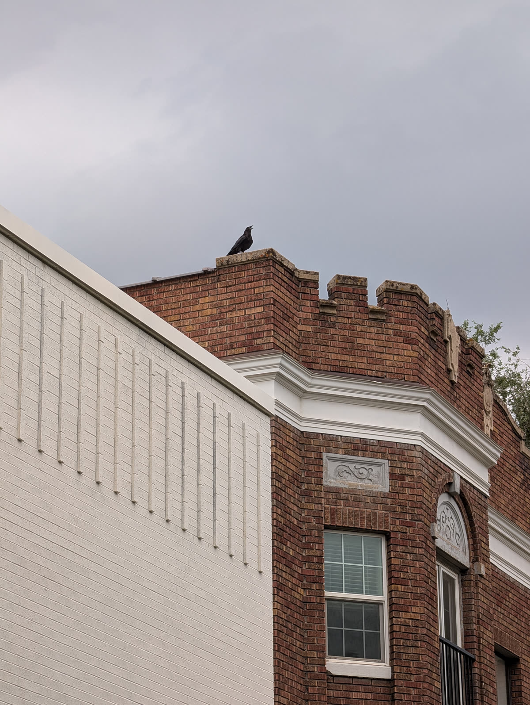
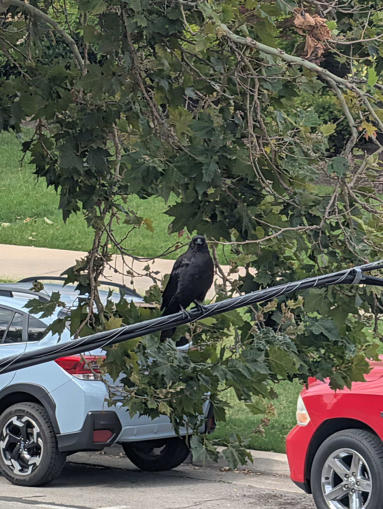
Killer calls back when I say “bye buddies.” That is not a result. It is why I started.
This is a one-person project that does not need to stay one. There is more work here than time, and several parts are self-contained enough to hand to someone who finds them interesting.
This project will be open sourced soon. For now I am keeping it closed, because prototyping is faster without an audience for every half-finished idea. Ask and I will add you as a private contributor in the meantime.
Tell me what you'd want to work on: hello located at cawtalker period org.
Two projects convinced me this was worth attempting at all. Neither is mine, and both are further along than anything here.
Vittorio Baglione and Daniela Canestrari at the University of León, with the Earth Species Project, put tiny recorders on wild carrion crows in northern Spain and mapped the repertoire of 24 family groups against what the birds were actually doing. Those crows are cooperative breeders: the young stay home for years and help raise their siblings, which is exactly what Edgar is doing on the roof here. It is the same question as this project, asked with instruments. The preprint.
The Cetacean Translation Initiative is doing this for sperm whales: tags, buoys and drones feeding machine learning, with the stated aim of a blueprint for another species' language. They have proposed a phonetic alphabet for whale codas. If it can be attempted at that scale in the open ocean, it can be attempted in a backyard.